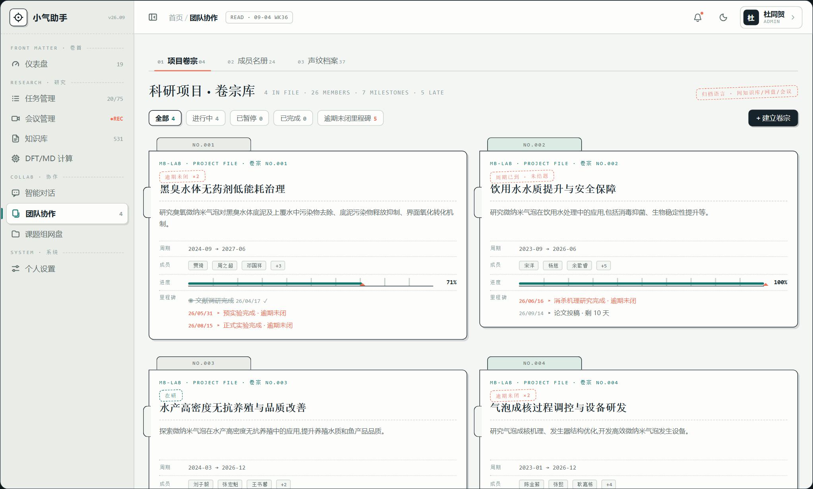
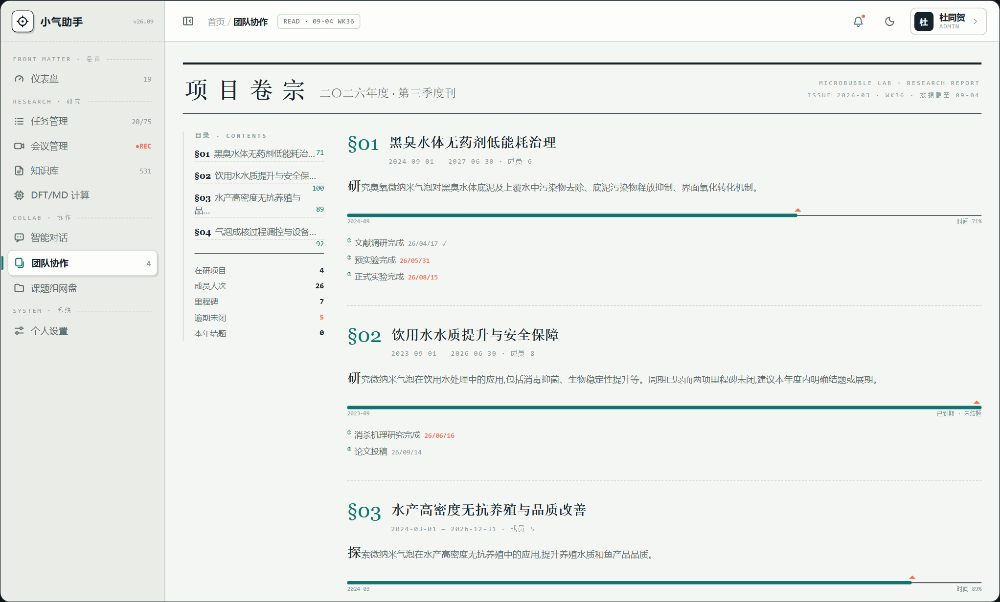
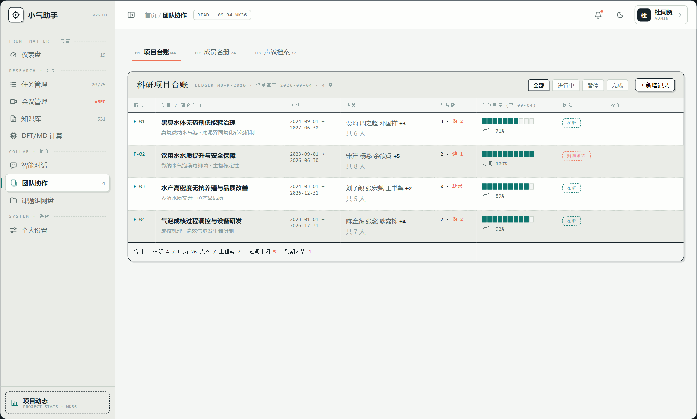
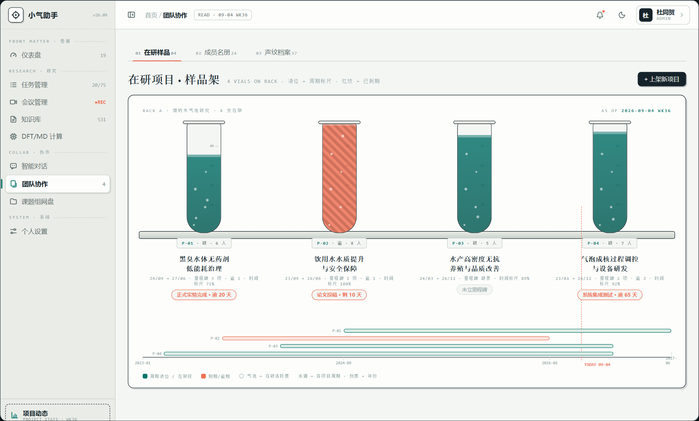

100%
滚轮缩放 · 拖拽平移 · 双击 1:1 · Esc 关闭
延续已上线的「研究档案」语言(知识库档案室 / 网盘档案柜 / 会议档案 / 任务 G 稿控制台)。四稿共用现网 G 皮肤外壳(侧栏+顶栏不动),只有内容区换脸;数据全为真实盘点值(在研 4 / 成员 26 人次 / 里程碑 7 · 逾期未闭 5 / P-02 已到期未结题)。点击截图放大(滚轮缩放 / 拖拽平移 / 双击 1:1 / Esc 关闭),每稿页面里还有 ☾ 夜览按钮预览深色。
每个项目一本悬挂式卷宗:顶部吊签(NO.001)、左侧装订孔、骑缝章状态戳。摘要/周期/成员标本签/刻度尺进度(今日红指针)/里程碑逾期标红,一张卡讲完一个项目。

整页做成实验室年度公报:双线刊头 + 左侧目录(点线引导到百分比)+ §01-§04 章节正文 + 尾注式里程碑。文字密度最高、最「出版物」,适合给评审/汇报场景加分。

一页台账纸:编号/项目/周期/成员/里程碑/时间进度(10 格墨点)/状态戳/行内操作,合计行收底。26 人 7 里程碑 5 逾期一眼扫完,是「管项目」而不是「看项目」。

项目=架上样品管:液位是周期标尺(时间过到哪),管内上升气泡呼应「微纳米气泡」本行;到期项目红纹警示。下方年份轴拉通四个项目周期,TODAY 红虚线一刀切开。
